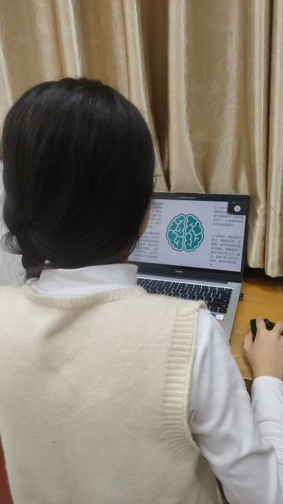
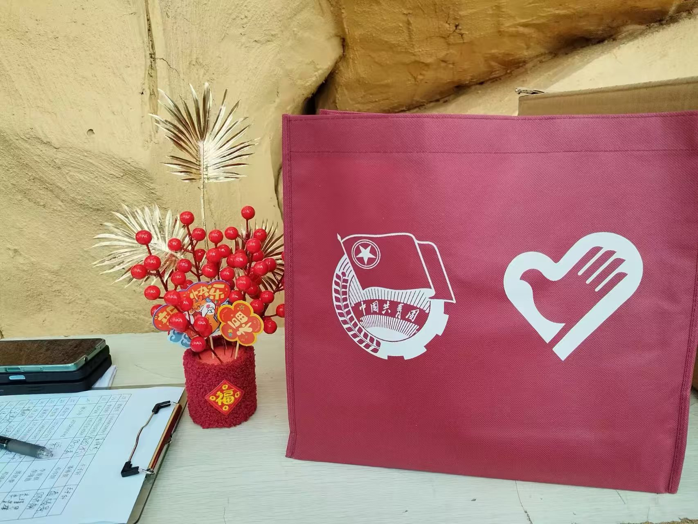
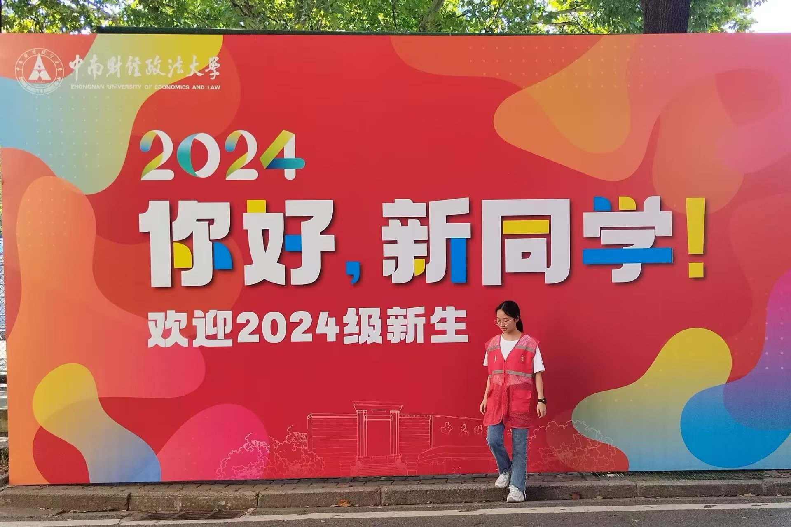
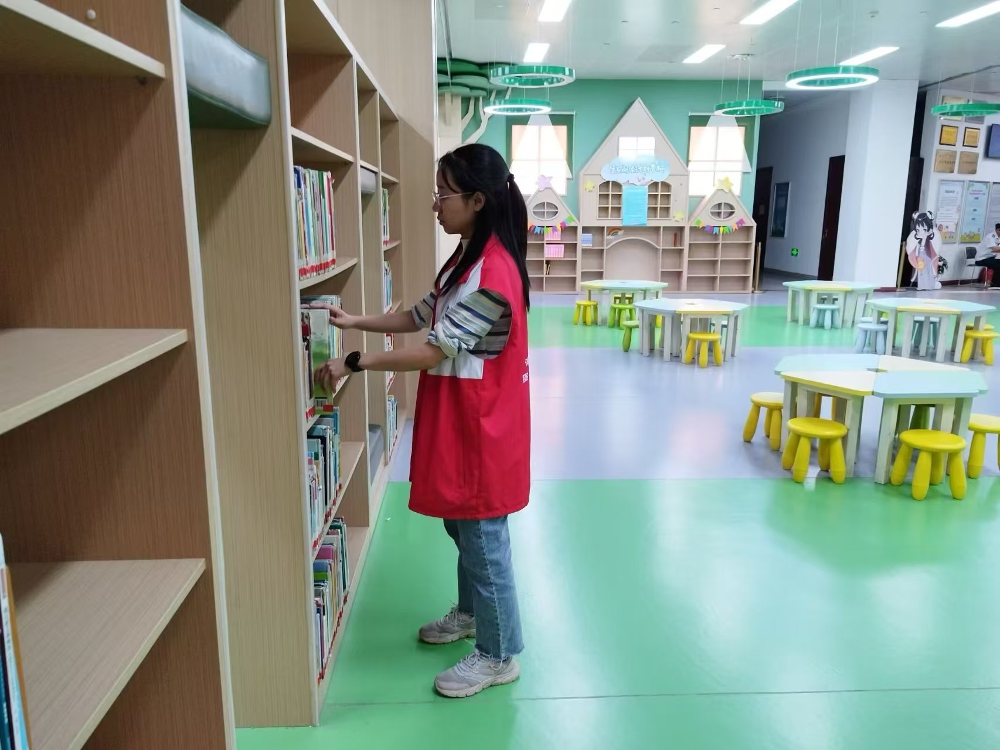
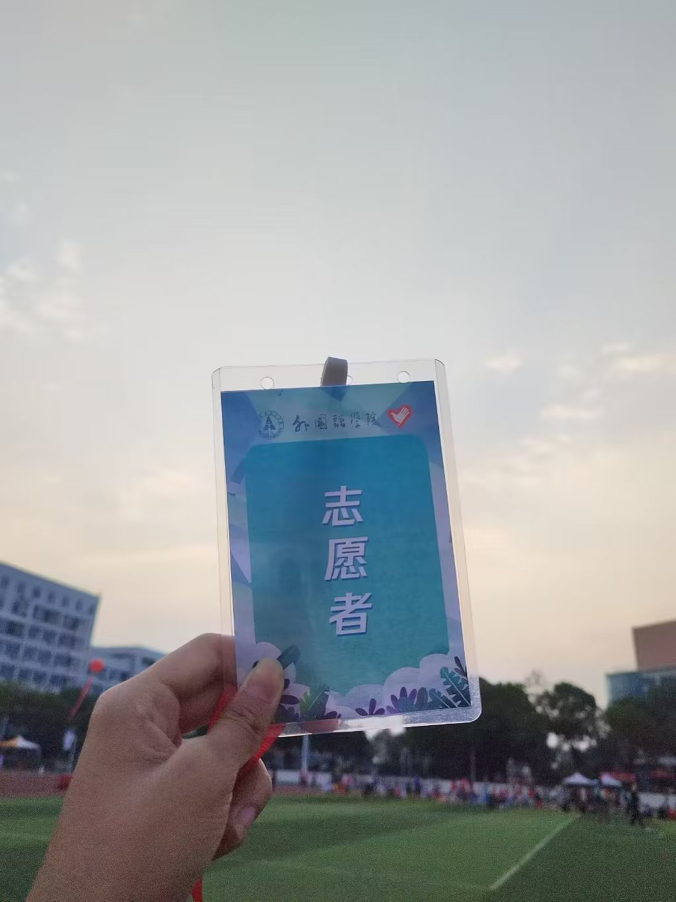
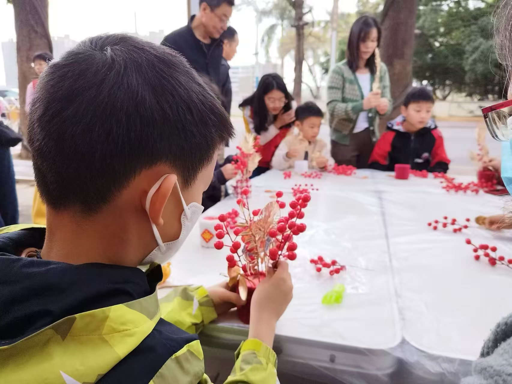
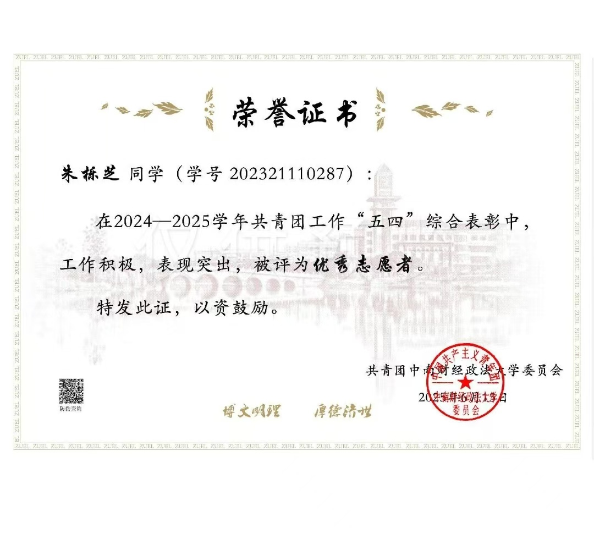

ℹ️ 为保护实习公司隐私，实习经历已在网申和简历中填写
To protect internship company privacy, internship experience is provided in job applications
求学之路 / Academic Journey
2023.09 - 2027.06
信息管理与信息系统 / 211
主修课程
管理信息系统、Python机器学习、Java程序设计、数据库系统等
荣誉奖项
成绩排名前7%，多次获得一等奖学金，校级优秀共青团员，校级优秀班干部等荣誉
校园活动
曾任非遗社团社长与新生辅导员助理，组织多项校园文化活动
多彩校园 / Colorful Campus Life
连续2年参与

WJ01支教现场新年盆栽手工

YM01
DT01地铁引导
TS01图书馆整理赛事志愿服务

XY01
XJ01荣誉证书
SQ01社区服务积极参与各类志愿服务活动，累计服务时长超过300小时，获得星级志愿者和校级优秀志愿者荣誉称号。
志愿服务让我更加懂得感恩与奉献，每一次服务都是一次成长的机会。能够用自己的力量帮助他人，让我感到无比充实和快乐。
创新实践 / Innovation Practice
创始人 / Founder
2024年04月 - ~
全面负责工作室运营管理，通过小红书等社交媒体平台及淘宝、闲鱼等电商平台承接教学设计与教育内容创作业务
独立创作原创教学设计、说课稿、逐字稿等教育文档，并根据实际工作痛点使用Coze搭建教学设计Agent，累计支撑完成各类教学文案接近80份
运用万彩等工具制作教学短动画，使用即梦等AIGC工具设计课堂任务单、板书等教学素材，提升教学内容的可视化呈现效果
建立客户需求沟通机制，从需求分析、方案设计到交付验收的全流程服务管理
80+
完成订单数量
98%
客户满意度
35%
复购率
商业思维培养：从零开始搭建业务体系，深入理解市场需求分析、定价策略、客户运营等商业核心要素
项目管理能力：同时管理多个项目进度，培养了高效的时间管理和任务优先级判断能力
内容创作技能：系统提升了文案撰写、视觉设计、视频制作等多元化内容生产能力
客户沟通技巧：积累了丰富的B端和C端客户服务经验，建立了以客户需求为导向的服务意识
Founded and operated an educational content creation studio, providing original teaching design, lesson presentation scripts, verbatim scripts, and teaching animation production services. Successfully completed 80+ orders with 98% customer satisfaction, developed comprehensive business management capabilities and content creation skills.